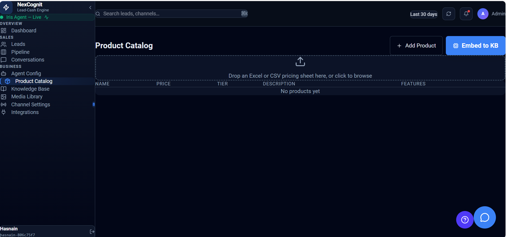

Product Catalog
The Product Catalog is used to store product or service information that helps Iris answer customer questions more accurately. It gives businesses a structured place to keep the details that support sales conversations and customer guidance.
Product Catalog overview
The Product Catalog helps organize the product information that matters when customers ask questions or need support. Depending on the setup, it may include names, descriptions, pricing-related context, or other business offering details.

What the Product Catalog is used for
The Product Catalog is used to keep product and service information in one place so it can be referenced during customer conversations. It supports a more accurate and relevant experience for prospects and customers asking about what you offer.
How product and service information helps Iris
When Iris has access to product and service details, it can respond with more relevant answers during conversations. This helps reduce generic responses and improves the usefulness of the interaction when customers ask about offerings, features, or business options.
How the Product Catalog supports accurate responses and sales conversations
The Product Catalog helps support accurate answers and smoother sales conversations by keeping the most important offering details in a structured place. This can make it easier for teams to provide clear information and guide customers toward the next step.
How it relates to the Knowledge Base and overall NexCognit setup
The Product Catalog works as part of the broader NexCognit setup alongside the Knowledge Base. While the Knowledge Base is a general place for business information, the Product Catalog focuses on the structured information related to your offerings.
Things to know
- The exact catalog structure may vary depending on your business setup.
- Keep product details clear and up to date so Iris can respond more accurately.
- Use the Product Catalog alongside the Knowledge Base for a fuller picture of your business information.